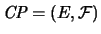
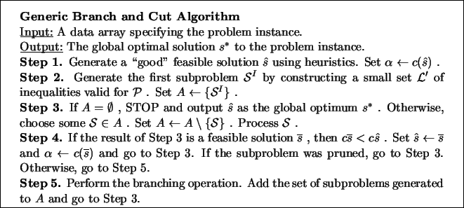

Back to SYMPHONY Home Page
Back to SYMPHONY Home Page
Next: Parallelizing Branch and Cut
Up: Branch and Cut Algorithms
Previous: Branch and Bound
Branch and cut is a specific implementation of branch and bound
that was first suggested in the seminal work on the subject by Padberg
and Rinaldi [19] for solving the well-known Traveling
Salesman Problem. Since then, many implementations (including ours)
have been fashioned after their ideas. In branch and cut, the bounding
operation is accomplished using the tools of linear programming.
Typically, the integrality constraints of an integer programming
formulation of the problem are relaxed to obtain a linear programming (LP) relaxation and then this
formulation is strengthened by adding cutting planes, i.e.
inequalities valid for the convex hull of solutions to the original
problem.
Figure 1:
Bounding in the branch and cut algorithm
![\framebox[5.75in]{
\begin{minipage}{5.25in}
\vskip .1in
{\rm
{\bf Bounding Opera...
... C} \leftarrow {\cal C} \cup {\cal
C'}$\space and go to Step 2.}
\end{minipage}}](img6.gif) |
For example, let a combinatorial optimization problem

with ground set E and feasible set
 be given along with a cost function
be given along with a cost function
 .
The incidence vectors corresponding to the members of
.
The incidence vectors corresponding to the members of  are
usually specified as the the set of all incidence vectors obeying a
(relatively) small set of inequalities. These inequalities are
typically the ones used in the initial LP relaxation. Now let
are
usually specified as the the set of all incidence vectors obeying a
(relatively) small set of inequalities. These inequalities are
typically the ones used in the initial LP relaxation. Now let  be the convex hull of incidence vectors of members of .
Then we know by Weyl's Theorem (see [18]) that there exists
a finite set
be the convex hull of incidence vectors of members of .
Then we know by Weyl's Theorem (see [18]) that there exists
a finite set  of inequalities valid for
such that
of inequalities valid for
such that
The inequalities in
are the potential cutting planes to be
added to the relaxation as needed. Unfortunately, it is usually
difficult, if not impossible, to enumerate all of inequalities in
or we could simply solve the problem using linear
programming. Instead, we use separation algorithms and heuristics to
generate these inequalities when they are violated. In Figure
1, we describe more precisely how the bounding
operation is carried out in branch and cut.
Figure 2:
Branching in the branch and cut algorithm
![\framebox[5.75in]{
\begin{minipage}{5.25in}
\vskip .1in
{\rm
{\bf Branching Oper...
...\space is the set of inequalities used to describe ${\cal S}$ .}
\end{minipage}}](img14.gif) |
Once we have failed to either prune the current subproblem or separate
the current fractional solution from ,
we are forced to
branch. The branching operation is accomplished by specifying a set of
hyperplanes which divide the current subproblem in such a way that the
current solution is not feasible for the LP relaxation of any of the
new subproblems. For example, in a combinatorial optimization problem,
branching could be accomplished simply by fixing a variable whose
current value is fractional to 0 in one branch and 1
in the other. The procedure is described more formally in Figure
2. Figure 3 gives a high level description
of the entire generic branch and cut algorithm.
Figure 3:
Description of the generic branch and cut algorithm
|
 |
In the remainder of the paper, we will sometimes refer to the search tree. This term is derived from the useful practice of viewing
the list of subproblems processed during the algorithm as the nodes of
a graph in which each subproblem is connected to its parent. This
graph is known as the search tree. Since the subproblems
correspond to the nodes of this graph, they will sometimes be referred
to as nodes in the search tree or simply as nodes. The
root node or root of the tree is the first node from which
all others descend.
Next: Parallelizing Branch and Cut
Up: Branch and Cut Algorithms
Previous: Branch and Bound
Ted Ralphs
2000-09-13